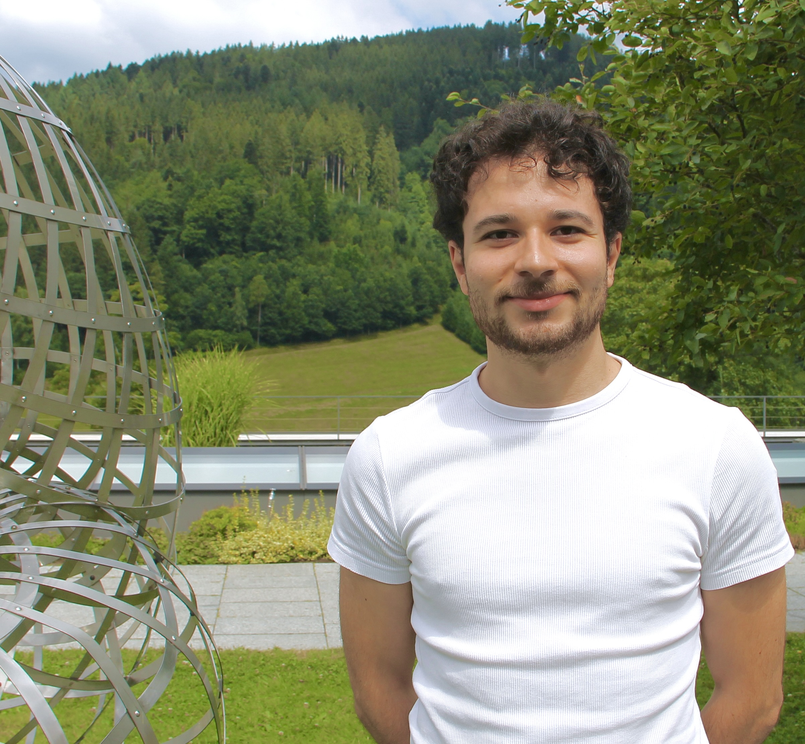

Nelson Schuback
Postdoctoral Researcher at the Jagiellonian University in Kraków
Institute of Mathematics,
Jagiellonian University
Kraków, Poland
I recently completed my PhD at Sorbonne Université (IMJ-PRG), under supervision of Patrice Le Calvez
I am a postdoctoral researcher at the Institute of Mathematics of the Jagiellonian University in Kraków, Poland, as a member of Jan P. Boroński's team within the NCN Sonata Bis project on topological and dynamical properties of non-hyperbolic attractors.
My research interests lie at the interface of low-dimensional topology/geometry and
dynamical systems.
I am currently working on the classification problem of Brouwer mapping classes, which are special elements of the mapping class group of the flute surface. My approach to this problem uses mostly techniques from Brouwer-Le Cavez foliations and hyperbolic geometry.
- Surface homeomorphisms
- Planar Foliations
- Brouwer theory
- Big mapping class groups
Publications & Preprints
-
An index theory for transverse trajectories
-
A foliated viewpoint on Homotopy Brouwer Theory
-
Refined methods in Foliated Brouwer Theory
Dissertations
-
A foliated viewpoint on homotopy Brouwer theory
-
A synthesis on classical Brouwer theory
Talks
2025
-
Un point de vue feuilleté sur la théorie de Brouwer homotopique Géométrie & Dynamique à Aussois, 8ème édition — Centre Paul Langevin, Aussois, France
2024
-
What is rotation theory on surfaces? PhD Students' Seminar — IMJ-PRG, Paris, France
-
Maryam Mirzakhani and non-Euclidean geometry Série "Un texte, un mathématicien 2024" — Lycée Blaise Pascal d'Orsay, France
-
Isotopy classes of Brouwer homeomorphisms relative to r > 0 orbits GDT Dynamiques Sauvages — IMJ-PRG, Paris, France
-
Isotopy classes of Brouwer homeomorphisms relative to r > 0 orbits Dynamical Systems Seminar — IMRL-UdelaR, Montevideo, Uruguay
2023
-
Homotopy Brouwer theory meets transverse foliations Surfaces in Banyuls — Oceanological Observatory, Banyuls-sur-Mer, France
-
Homological rotation set of Axiom A diffeomorphisms GDT Dynamiques Sauvages — IMJ-PRG, Paris, France
-
Periodic orbits of Hamiltonian homeomorphisms on surfaces GDT Dynamiques Sauvages — IMJ-PRG, Paris, France
2019 – 2022
-
Genericity of transverse homoclinic intersections for conservative surface diffeomorphisms GDT Dynamiques Sauvages — IMJ-PRG, Paris, France
-
Applications of prime-ends rotation sets to conservative surface diffeomorphisms GDT Dynamiques Sauvages — IMJ-PRG, Paris, France
-
Ck-linearization of non-resonant hyperbolic fixed points GDT Dynamiques Sauvages — IMJ-PRG, Paris, France
-
On the Weinstein conjecture for overtwisted contact 3-manifolds Seminar on Symplectic Topology — IMPA, Brazil
-
Positive entropy for torus homeomorphisms with rotation set of non-empty interior Topological Surface Dynamics course seminars — IME-USP, Brazil
-
A non-ergodic minimal real-analytic conservative diffeomorphism Ergodic Theory course — IME-USP, Brazil
Teaching
Sorbonne Université — UFR 929 Mathématiques
| Spring 2025 | LU2MA122 – Algèbre linéaire et bilinéaire II | 10 h |
| Spring 2025 | LU1MA003 – Mathématiques approfondies | 52 h |
| Fall 2023 & 2024 | LU1MA001 – Mathématiques pour les études scientifiques I | 156 h |
| Spring 2023 | LU1MA003 – Mathématiques approfondies | 52 h |
| Fall 2022 | LU2MA216 – Topologie et calcul différentiel I | 36 h |
| Spring 2022 | LU1MA003 – Mathématiques approfondies | 52 h |
University of São Paulo — IME-USP / CCM-USP
| Fall 2020 | MAP0327 – Classical Analytical Mechanics | 42 h |
| Fall 2019 | CCM0213 – Mathematics III | 42 h |
| Spring 2017 | CCM0123 – Mathematics II | 42 h |
| Fall 2016 | CCM0113 – Mathematics I | 42 h |